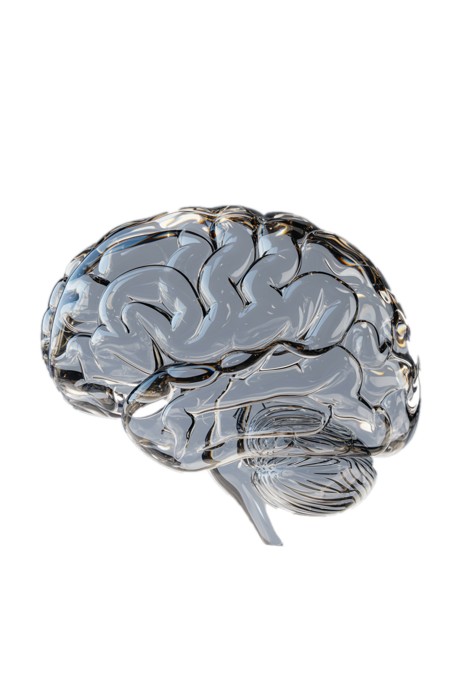

Save your chosen glass-brain render to this folder
as
brain-glass.png
and reload.
P E L A G I C S P E C I M E N
Plate I · Encephalon, neural activity simulation
fig. 1
A U T I S M D A T A A T L A S
Typical
E/I imbalance
Seizure wave
MEF2C dysfunction
Default-mode